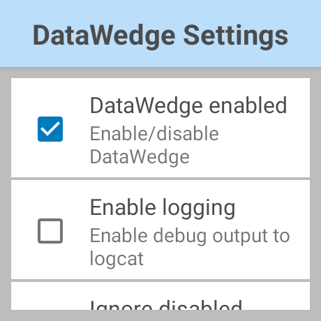
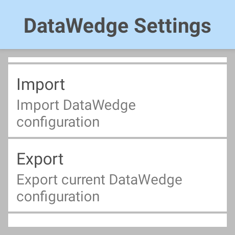

Overview
The Zebra WS50 is a compact Android enterprise-class wearable mobile computer that delivers key features of a full-size mobile computer, including capturing barcodes and high resolution photos, push-to-talk, and programmable buttons. Although the core DataWedge functionality and features exist, there are limitations due to restrictions based on the small screen size and form factor. This guide discusses the features and functionality of DataWedge on the WS50.
 WS50 Photos
WS50 Photos
Supported Features
The following DataWedge features are supported on WS50:
- DataWedge profiles – Profiles specify how data is acquired (input), processed (format data) and delivered (output) to the app. On WS50, DataWedge is restricted to only allow profile names to be viewed, without the ability to view its details. The following profile configurations are supported:
- Data input:
- Barcode scanning – Acquire data by scanning barcodes.
- Data processing:
- BDF (basic data formatting) – Process acquired data based on basic formatting rules.
- ADF (advanced data formatting) – Process acquired data based on custom formatting rules.
- Data output:
- Intent output (recommended) – Acquired data is passed to the associated app, where it can be consumed or processed.
- Keystroke output – Collects acquired data and sends it to the associated app as a series of keystrokes.
- Import DataWedge configuration – Import DataWedge configuration and/or profile(s). Refer to the Configuration section.
- DataWedge Intent APIs – Programmatically control data capture using Android intents. All APIs are supported.
- DataWedge Manager CSP - Mass deploy DataWedge configurations with the underlying MX framework.
Limitations
Limitations of DataWedge on WS50:
- Due to the limited user interface (UI), Zebra recommends using a non-WS50 Zebra mobile computer to configure the DataWedge profile through the UI with the desired settings, export the profile, then import it to WS50. Alternatively, DataWedge intent APIs can be used to programmatically configure DataWedge.
- The main screen on DataWedge displays a list of the imported profiles. Profile details cannot be viewed or modified on the WS50. A menu option is available to import the configuration.
- Decode Haptic Feedback from Scan Params is not supported on WS50 with scanning framework version 31.8.1.0 or later.
- The following DataWedge features are not supported:
a. RFID Input
b. Serial Input
c. Workflow Input
d. Voice Input
e. DWDemo – A DataWedge sample app that is built-in with other Zebra Android mobile computers. After performing a factory reset or enterprise reset on WS50, the DWDemo icon is visible for a few seconds, then disappears.
f. Data Capture Plus - Enables an area of the device screen to be designated as a scan trigger
g. Auto import of the config file and profile - On devices configured with Android multi-user profiles, DataWedge may not work as expected.
Recommendations
Due to special characteristics on the WS50, Zebra recommends using DataWedge for scanning barcodes in applications based on the guidelines below:
- If multiple applications require barcode scanning to be performed, create a separate DataWedge profile for each application.
Use the export/import configuration file method to configure the WS50. On a non-WS50 Zebra Android mobile computer, create the configuration for DataWedge targeting WS50, export the configuration, then import it to the WS50. See the Configuration and Deployment sections below.
If barcode scanning needs to be restricted to specific applications, disable Profile0, the default DataWedge profile.
If the application is required to change scanning behavior during application use, Switch Scanner Params intent API can be used to change the scanner parameters.
Configuration
A DataWedge profile determines how to acquire, process and output data based on the app running. DataWedge profiles cannot be viewed or edited on WS50. Use one of the following methods to configure DataWedge profiles:
- User Interface (UI) - Create the DataWedge profile from another Zebra Android mobile computer, export the profile, then import it to the WS50.
- Programmatically - Use the DataWedge intent API to create the DataWedge profile.
A DataWedge configuration file contains all DataWedge settings, including profile(s) and the following configurable paramters:
- Enable/disable DataWedge
- Ignore disabled profiles - Prevents DataWedge from switching to a profile that is disabled.
- Disable apps - Prevents apps from capturing data.
DataWedge settings can be configured via the UI or by importing the configuration file that is exported from another device.
More details on DataWedge configuration are provided in the sections that follow.
Create Profile/Configuration via UI
To create the DataWedge profile or configuration file via the UI:
- On a non-WS50 Zebra Android mobile computer, follow steps to create the profile.
- To associate the app to the profile, temporarily install the target app for WS50 on the mobile computer.
- Configure the profile with the desired settings. Zebra recommends the following:
A. Associate the application to the profile from the app temporarily installed.
B. Make sure Barcode input is enabled. Configure the Barcode input parameters for the internal imager.
C. Disable Keystroke output.
D. Enable Intent output for more flexibility in performing data processing. Adjust the settings according to the requirements based on the application receiving the data.
• Basic Data Formatting or Advanced Data Formatting can be configured for the Intent output plugin to control how the data is processed.
E. Make sure unsupported DataWedge features are not enabled within the profile. See the WS50 Limitations section. - To export the profile, follow steps here. The file is exported to
dwprofile_[profilename].db, where [profilename] is the file name entered. - To export the configuration file (includes DataWedge settings and all profiles), follow steps to here. The file is saved as
datawedge.db.
Now that the profile or configuration file is exported from the mobile computer, follow steps in the Deployment section to deploy or import the file to the WS50.
Create Profile Programmatically
A DataWedge profile can be configured programmatically with the use of Set Config from DataWedge intent APIs. See the Data Capture sample for reference.
Configure DataWedge Settings
There are 2 methods to configure DataWedge settings:
- Import the configuration file from a non-WS50 Zebra Android mobile computer after the file has been exported.
- Use the user interface to configure the settings as desired.
Import Configuration File
To import the configuration file, follow steps to import the file in the Deployment section.
Configure via UI
To access DataWedge Settings from the UI:
Tap on the top right menu and select Settings.

The following options are listed:
- DataWedge enabled - Controls the DataWedge service. Uncheck this box to disable DataWedge on the device and return control of scanning hardware to the system.
- Enable logging - Enables DataWedge to output logs for viewing with Logcat, within Android Studio or with another compatible viewer.
- Ignore disabled profiles - Prevents DataWedge from switching to a profile that is disabled when the app calls Switch to Profile API.
- Disabled app list - Disables scanning functionality for selected apps and/or activities on the device.
- Import – Imports a DataWedge profile or configuration file from device storage, replacing the current DataWedge settings and the profile, if it previously exists. See the Deployment section for more details.
- Export - Exports the current DataWedge configuration to device storage. Learn more.
- Restore - Returns DataWedge on the device to factory default settings. See more on Learn more.
  DataWedge Settings
Deployment
Deploy the DataWedge profile or configuration file by copying the exported file (see Configuration section) onto the WS50 device, then importing the configuration as follows:
Copy the exported configuration file (
datawedge.db) or profile (dwprofile_[profilename].db, where [profilename] is the file name entered) to the WS50 device in folder location:/storage/emulated/0/Android/data/com.symbol.datawedge/filesOpen DataWedge.

Tap on the top right menu and select Settings.
Scroll down and select Import.

Browse and select the desired profile or configuration file to import.
The file is imported. If the import is successful, a confirmation message appears.
The imported profile is listed in the DataWedge Profiles screen.
Receive Data
On WS50, data received by DataWedge can be output via intent or keystroke.
Via Intent
Use Intent Output to receive barcode data via intents. This can be configured through the UI (using another device) or programmatically using Set Config. Specify the component information to ensure data is delivered only to the intended application when using Broadcast intents. Refer to DataWedge Intent API section below.
Note: By default, Keystroke Output is enabled in all the profiles. When Intent Output plugin is enabled, make sure to disable Keystroke Output plugin to avoid unexpected data dispatched to a text field in focus within the application.
Via Keystroke
Use Keystroke Output to send data to the associated application as a series of keystrokes. This is configured through the profile.
DataWedge Intent API
DataWedge intent APIs programmatically control DataWedge configuration within an application, including how data is captured, processed, and output. All DataWedge APIs are supported on WS50. The commonly used APIs are provided in this section along with links to the related documentation.
Create/Update Profile
Use Set Config to create or update a profile and its settings. The profile includes settings on how the data is input, processed, and output. Data can be processed with Basic Data Formatting (BDF) or Advanced Data Formating (ADF). It is important to include the following in a profile:
- App association – Specify the app associated to the profile based on the PACKAGE_NAME.
- Scanner input configuration – Specify the barcode input parameters for data capture.
- Output configuration – Specify how the data is output based on the output method, either Intent Output or Keystroke Output.
Import Config or Profile
Use Import Config intent API to import a config file or profile(s) after exporting from a Zebra Android mobile device. Specify the following folder path to import the file(s):
/storage/emulated/0/Android/data/com.symbol.datawedge/files/
Update Scanner Params at Runtime
Use Switch Scanner Params to update the barcode, scanner, and/or reader parameters of the active profile during runtime.
Control Scanner
Use Scanner Input Plugin to control the barcode scanner while in use with the active profile. Enable/disable or suspend/resume the scanner during runtime. Action can be taken based on the scanner status (SCANNER_STATUS), which is retrieved from registering the scanner status notification. This is helpful to suspend the scanner while the application is still processing data from a scan until it is ready to accept the next scan.
Best Practices
Refer to the Best Practices documentation for guidance on use of the DataWedge APIs.
Sample App
The Truck Loading Demo app demonstrates a workflow scanning packages to load onto trucks.
Related Guides:
- EMDK for Android Programmer's Guide - provides further insight and considerations for programming on WS50
- DataWedge APIs
- Profiles
- DataWedge Settings
- Truck Loading Demo